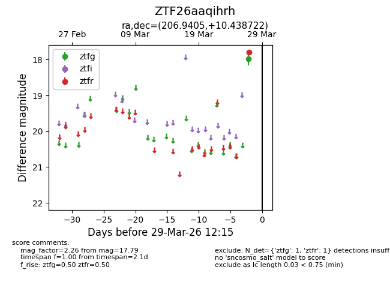
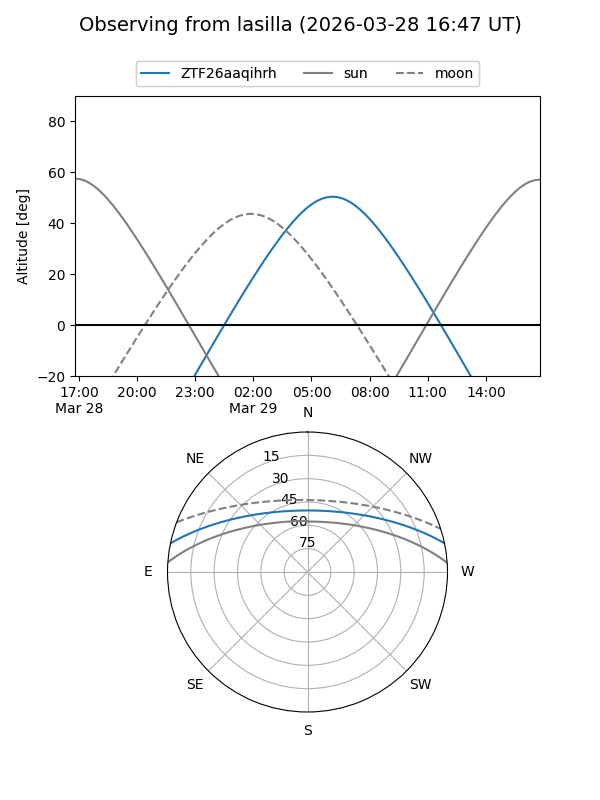
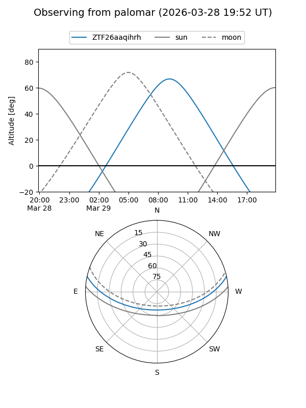

ZTF26aaqihrh
Target ZTF26aaqihrh at 2026-03-29 12:18
Aliases and brokers:
FINK: link
Lasair: link
ALeRCE: link
alt names
ZTF26aaqihrh (ztf,fink_ztf)
Coordinates:
equatorial (ra, dec) = 206.9405,+10.43872
equatorial (HMS+DMS) = 13:47:45.73,+10:26:19.40
galactic (l, b) = (344.0906,+68.68178)
Flags:
Photometry:
last ztfg=17.98, ztfr=17.79
1 ztfg, 1 ztfr detections
Lightcurve

Visibility


Additional plots